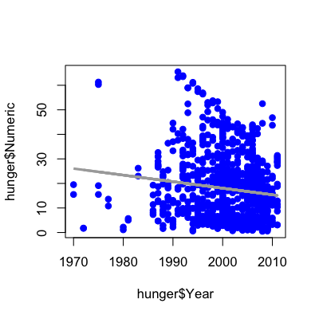
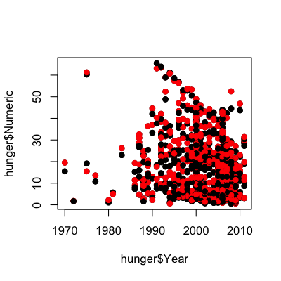
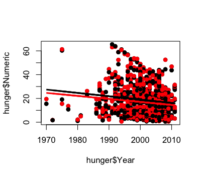
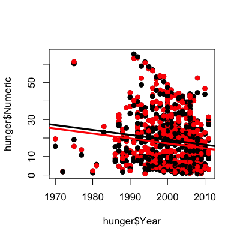
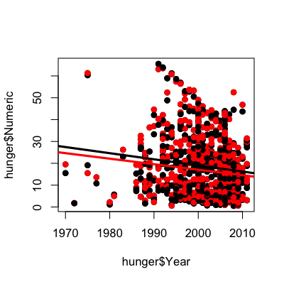

- Regression with multiple covariates
- Still using least squares/central limit theorem
- Interpretation depends on all variables
Multiple regression
Jeffrey Leek, Assistant Professor of Biostatistics
Johns Hopkins Bloomberg School of Public Health
Key ideas
Example - Millenium Development Goal 1

http://www.un.org/millenniumgoals/pdf/MDG_FS_1_EN.pdf
http://apps.who.int/gho/athena/data/GHO/WHOSIS_000008.csv?profile=text&filter=COUNTRY:;SEX:
WHO childhood hunger data
download.file("http://apps.who.int/gho/athena/data/GHO/WHOSIS_000008.csv?profile=text&filter=COUNTRY:*;SEX:*","./data/hunger.csv",method="curl")
hunger <- read.csv("./data/hunger.csv")
hunger <- hunger[hunger$Sex!="Both sexes",]
head(hunger)
Indicator Data.Source PUBLISH.STATES Year WHO.region
2 Children aged <5 years underweight (%) NLIS_312819 Published 2004 Eastern Mediterranean
3 Children aged <5 years underweight (%) NLIS_312819 Published 2004 Eastern Mediterranean
6 Children aged <5 years underweight (%) NLIS_312361 Published 2000 Europe
7 Children aged <5 years underweight (%) NLIS_312361 Published 2000 Europe
9 Children aged <5 years underweight (%) NLIS_312879 Published 2005 Europe
10 Children aged <5 years underweight (%) NLIS_312879 Published 2005 Europe
Country Sex Display.Value Numeric Low High Comments
2 Afghanistan Female 33.0 33.0 NA NA NA
3 Afghanistan Male 32.7 32.7 NA NA NA
6 Albania Male 19.6 19.6 NA NA NA
7 Albania Female 14.2 14.2 NA NA NA
9 Albania Male 7.3 7.3 NA NA NA
10 Albania Female 5.8 5.8 NA NA NA
Plot percent hungry versus time
lm1 <- lm(hunger$Numeric ~ hunger$Year)
plot(hunger$Year,hunger$Numeric,pch=19,col="blue")
Remember the linear model
\[Hu_i = b_0 + b_1 Y_i + e_i\]
\(b_0\) = percent hungry at Year 0
\(b_1\) = decrease in percent hungry per year
\(e_i\) = everything we didn't measure
Add the linear model
lm1 <- lm(hunger$Numeric ~ hunger$Year)
plot(hunger$Year,hunger$Numeric,pch=19,col="blue")
lines(hunger$Year,lm1$fitted,lwd=3,col="darkgrey")

Color by male/female
plot(hunger$Year,hunger$Numeric,pch=19)
points(hunger$Year,hunger$Numeric,pch=19,col=((hunger$Sex=="Male")*1+1))

Now two lines
\[HuF_i = bf_0 + bf_1 YF_i + ef_i\]
\(bf_0\) = percent of girls hungry at Year 0
\(bf_1\) = decrease in percent of girls hungry per year
\(ef_i\) = everything we didn't measure
\[HuM_i = bm_0 + bm_1 YM_i + em_i\]
\(bm_0\) = percent of boys hungry at Year 0
\(bm_1\) = decrease in percent of boys hungry per year
\(em_i\) = everything we didn't measure
Color by male/female
lmM <- lm(hunger$Numeric[hunger$Sex=="Male"] ~ hunger$Year[hunger$Sex=="Male"])
lmF <- lm(hunger$Numeric[hunger$Sex=="Female"] ~ hunger$Year[hunger$Sex=="Female"])
plot(hunger$Year,hunger$Numeric,pch=19)
points(hunger$Year,hunger$Numeric,pch=19,col=((hunger$Sex=="Male")*1+1))
lines(hunger$Year[hunger$Sex=="Male"],lmM$fitted,col="black",lwd=3)
lines(hunger$Year[hunger$Sex=="Female"],lmF$fitted,col="red",lwd=3)

Two lines, same slope
\[Hu_i = b_0 + b_1 \mathbb{1}(Sex_i="Male") + b_2 Y_i + e^*_i\]
\(b_0\) - percent hungry at year zero for females
\(b_0 + b_1\) - percent hungry at year zero for males
\(b_2\) - change in percent hungry (for either males or females) in one year
\(e^*_i\) - everything we didn't measure
Two lines, same slope in R
lmBoth <- lm(hunger$Numeric ~ hunger$Year + hunger$Sex)
plot(hunger$Year,hunger$Numeric,pch=19)
points(hunger$Year,hunger$Numeric,pch=19,col=((hunger$Sex=="Male")*1+1))
abline(c(lmBoth$coeff[1],lmBoth$coeff[2]),col="red",lwd=3)
abline(c(lmBoth$coeff[1] + lmBoth$coeff[3],lmBoth$coeff[2] ),col="black",lwd=3)

Two lines, different slopes (interactions)
\[Hu_i = b_0 + b_1 \mathbb{1}(Sex_i="Male") + b_2 Y_i + b_3 \mathbb{1}(Sex_i="Male")\times Y_i + e^+_i\]
\(b_0\) - percent hungry at year zero for females
\(b_0 + b_1\) - percent hungry at year zero for males
\(b_2\) - change in percent hungry (females) in one year
\(b_2 + b_3\) - change in percent hungry (males) in one year
\(e^+_i\) - everything we didn't measure
Two lines, different slopes in R
lmBoth <- lm(hunger$Numeric ~ hunger$Year + hunger$Sex + hunger$Sex*hunger$Year)
plot(hunger$Year,hunger$Numeric,pch=19)
points(hunger$Year,hunger$Numeric,pch=19,col=((hunger$Sex=="Male")*1+1))
abline(c(lmBoth$coeff[1],lmBoth$coeff[2]),col="red",lwd=3)
abline(c(lmBoth$coeff[1] + lmBoth$coeff[3],lmBoth$coeff[2] +lmBoth$coeff[4]),col="black",lwd=3)

Two lines, different slopes in R
summary(lmBoth)
Call:
lm(formula = hunger$Numeric ~ hunger$Year + hunger$Sex + hunger$Sex *
hunger$Year)
Residuals:
Min 1Q Median 3Q Max
-25.09 -11.61 -2.15 7.29 46.15
Coefficients:
Estimate Std. Error t value Pr(>|t|)
(Intercept) 522.4721 191.8987 2.72 0.0066 **
hunger$Year -0.2527 0.0959 -2.63 0.0086 **
hunger$SexMale 58.3730 271.3858 0.22 0.8297
hunger$Year:hunger$SexMale -0.0282 0.1357 -0.21 0.8353
---
Signif. codes: 0 '***' 0.001 '**' 0.01 '*' 0.05 '.' 0.1 ' ' 1
Residual standard error: 13.5 on 854 degrees of freedom
Multiple R-squared: 0.0228, Adjusted R-squared: 0.0193
F-statistic: 6.64 on 3 and 854 DF, p-value: 0.000197
Interactions for continuous variables
\[Hu_i = b_0 + b_1 In_i + b_2 Y_i + b_3 In_i \times Y_i + e^+_i\]
\(b_0\) - percent hungry at year zero for children with whose parents have no income
\(b_1\) - change in percent hungry for each dollar of income in year zero
\(b_2\) - change in percent hungry in one year for children whose parents have no income
\(b_3\) - increased change in percent hungry by year for each dollar of income - e.g. if income is $10,000, then change in percent hungry in one year will be
\[b_2 + 1e4 \times b_3\]
\(e^+_i\) - everything we didn't measure
Lot's of care/caution needed!